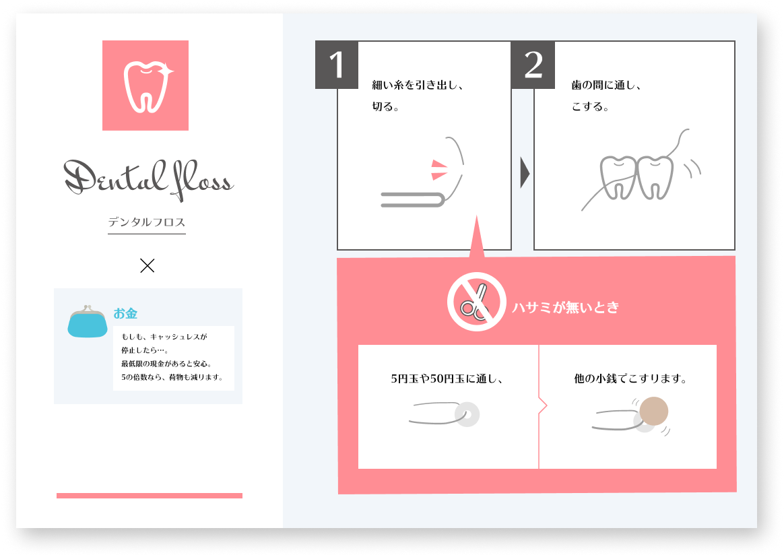
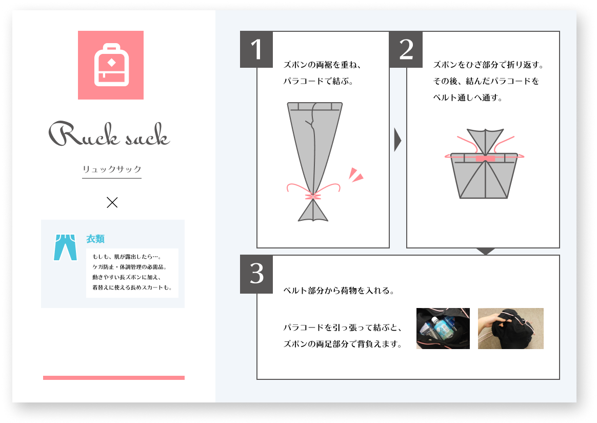
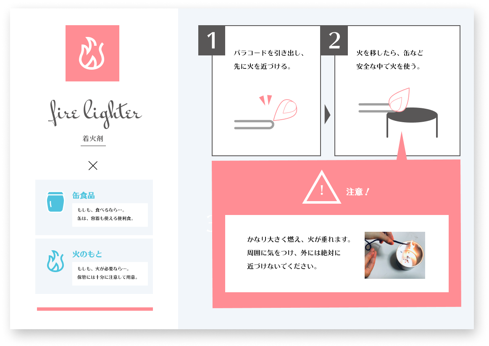
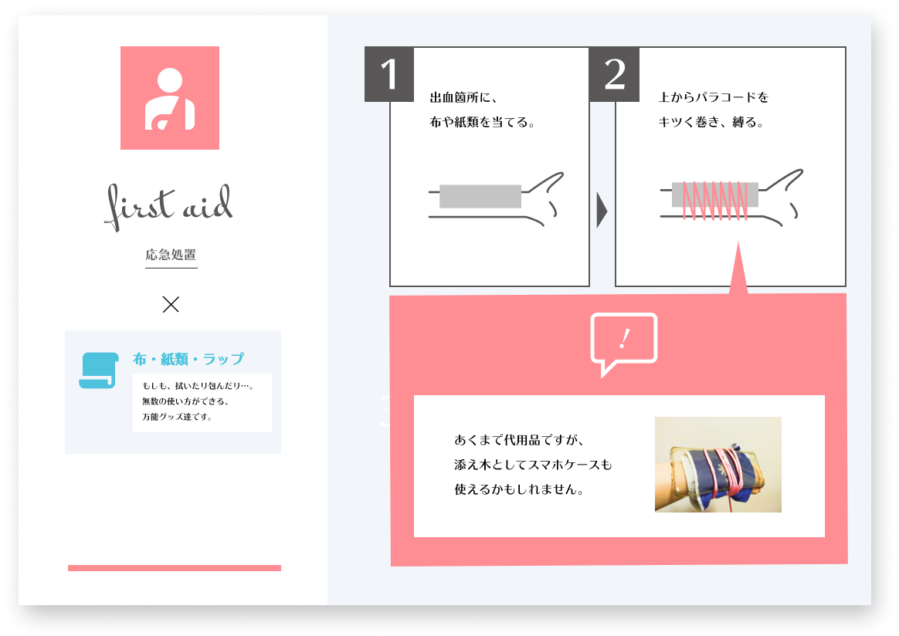

ノーマホをはらりと解けば…あっという間に、１本の強いパラコードへ早変わり。
さあ魔法のように、もしものスマホを使ってみましょう。
ここでは、ノーマホに結ばれたパラコードの使い方を、５つご紹介。
知恵や常備品を掛け合わせながら、解いて結んで、もしもの可能性を膨らませましょう。
大切なこと
ノーマホが大切にしているのは、魔法に負けない3つの力。
1.
応用力
ノーマホには、いろんな作り方・使い方があります。もっと使いやすく、もっと可愛くしたい。そんな欲求が、生き抜く欲求とつながりますように。
2.
接続力
ノーマホの使い方は、他の防災・サバイバルグッズと絡めて構成されています。他の対策物と一緒に組み合わせて考えていくと、他に必要な対策にも気づけます。
2.
想像力
災害時の状況を想像し、身の回りから対策を発想する…命を守るには、そんな力も重要だとか。
そこでノーマホでは、「一見サバイバルとは関係がなさそう」という意外性と、「自分で編み・自分でほどき、そこで初めて使える」という主体性から生まれる、想像力を大切にしました。「これはいつ、どう使えるか？」を、一緒に考えてみてください。
物理的な安心感だけでなく、柔軟な想像力も。
ぜひノーマホで、備えてみてくださいね。
印刷
ここで紹介する5つの活用法は、1枚のA4用紙へ出力が可能です。下の画像をクリックで、PDFが閲覧できます。
ぜひこちらのPDFから、参照してみて下さい。
またこの紙を折り畳めば、スマホの裏に挟み込むこともできます！
好きなようにカスタマイズして、使い方を確認してみて。
使い方
お口のキレイは、みんなの健康。
物資到着！貴重なものを、たくさん運ぼう。
火を分け合おう。もっと明るく、あったかく。
命をつなぐ、応急処置。
干せないもの・置けないもの。まとめて吊るして、明日も使おう。

※この媒体には、 Apache 2.0ライセンスで配布されている製作物が含まれています。
Apache License, Version 2.0
また、クリエイティブ・コモンズ・ライセンス（表示4.0 国際）を参考にして作成した制作物が含まれます。
CC BY 4.0